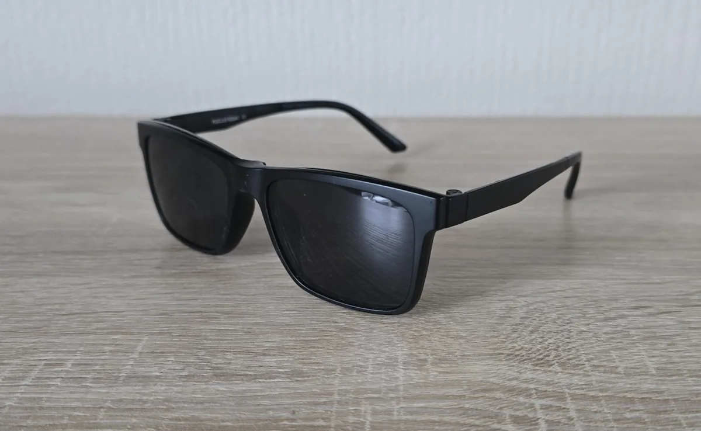

Что означают цифры в рецепте очков: SPH, CYL, AX, PD простыми словами
Получили рецепт от офтальмолога и ничего не поняли? Разбираем главные обозначения за пять минут: какие цифры нужны для заказа очков, а какие можно уточнить позже.

SPH (сфера) — главная цифра
SPH показывает силу линзы в диоптриях. Минус (−2.50) — близорукость, плюс (+3.00) — дальнозоркость. Значения указываются отдельно для правого глаза (OD) и левого (OS) — они часто различаются, и это нормально. Именно SPH вы вводите в форму заказа: шаг 0.25, диапазон от −12.00 до +6.00.
Если в рецепте стоит, например, OD −3.25, OS −3.00 — так и заказывайте: линзы сделают разными под каждый глаз. Галочка «диоптрии одинаковые» в форме — для тех, у кого значения совпадают.
CYL и AX — астигматизм
CYL (цилиндр) и AX (ось) появляются, если у вас астигматизм — роговица имеет не идеально сферическую форму. CYL — сила цилиндрической составляющей, AX — угол оси от 0 до 180 градусов. Такие линзы мы тоже делаем: укажите оба значения в комментарии к заказу или пришлите фото рецепта в Telegram — подтвердим стоимость и срок до оплаты.
Без AX линзу с цилиндром сделать нельзя: ось определяет ориентацию коррекции. Поэтому если в рецепте есть CYL, а AX пропущен — уточните у врача, не гадайте.
PD — расстояние между зрачками
PD (pupillary distance) — расстояние между центрами зрачков в миллиметрах, обычно 60–70 мм. Оно нужно, чтобы оптические центры линз совпали с вашими глазами. Иногда пишут два числа (например, 31/33) — расстояние от переносицы до каждого зрачка. Если PD в рецепте нет — напишите нам, подскажем, как измерить дома линейкой перед зеркалом.
ADD и прочие пометки
ADD (аддидация) встречается в рецептах на прогрессивные линзы и очки для чтения — для наших комплектов она не используется. Пометки вроде «VIS» (острота зрения) — это результат проверки, а не параметры для изготовления: заказывать по ним ничего не нужно.
Нет рецепта — что делать
Рецепт старше года лучше обновить: зрение меняется, а линзы делаются на годы. Но если проверки ждать некогда — отметьте в заказе «не знаю диоптрии», и мы поможем: подскажем варианты проверки, разберём старый рецепт, при необходимости свяжемся с оптикой. Оплата — только после подтверждения всех параметров.

Вопросы и ответы
Подойдёт ли рецепт от контактных линз? Нет, это разные рецепты: у линз другие значения из-за расстояния до глаза. Нужен именно очковый рецепт.
Что если глаза видят по-разному? Так бывает чаще всего. Укажите оба значения — линзы изготовят разными.
Можно ли заказать «про запас» без рецепта? Лучше сначала определить параметры: линзы делаются индивидуально и стоят денег. Напишите нам — поможем быстрее, чем кажется.
Рецепт выцвел, цифры не разобрать — что делать? Пришлите фото, попробуем прочитать вместе с вами. Не выйдет — подскажем, где перепровериться быстро и недорого. Заказывать по полустёртым цифрам наугад не будем: ошибка в полдиоптрии уже чувствуется.
OU, OD, OS — что это? OD — правый глаз, OS — левый, OU — оба глаза сразу. Значения для каждого глаза вводите в своё поле формы.
Где проверить зрение и как часто
Рецепт выдают в оптиках с кабинетом оптометриста и в глазных клиниках. Проверка занимает минут двадцать: таблица, пробная оправа, авторефрактометр. Просите именно очковый рецепт с SPH, CYL, AX и PD — рецепт от линз не подойдёт. Обновляйте проверку раз в год-два: зрение медленно меняется, а вы привыкаете и не замечаете. Если старые очки стали «не такими чёткими» — это повод проверить, а не терпеть.
Детям и подросткам рецепт обновляют чаще — растущий глаз меняется быстрее. После сорока добавляется пресбиопия, и рецепт усложняется — не пугайтесь новых строк, просто попросите врача объяснить каждую.
Храните рецепт правильно
Сфотографируйте рецепт сразу в кабинете — бумажки теряются, фото в телефоне остаётся. При заказе онлайн фото рецепта можно прислать нам в Telegram: проверим значения и подскажем, если что-то выглядит странно (например, пропущен AX при непустом CYL). Номер телефона врача на бланке тоже фотографируйте — пригодится, если понадобится уточнить детали.
Красные флаги в чужом рецепте
Проверяя чужой или старый рецепт перед заказом, смотрите на четыре вещи. Подозрительно круглые значения везде («ровно −3.00 на оба глаза» при жалобах на разное зрение) — возможно, рецепт округлили. Отсутствующий AX при заполненном CYL — рецепт неполный, линзу не сделать. Диоптрии, сильно отличающиеся от ваших ощущений («стало хуже, а цифры те же») — повод перепровериться. Рецепт без даты и печати — нельзя понять, актуален ли он. Во всех этих случаях лучше потратить двадцать минут на новую проверку, чем недели на переделку линз.
Что взять с собой на проверку зрения
Старые очки и прошлый рецепт — врачу важно видеть динамику. Список лекарств, если принимаете что-то влияющее на зрение или сухость глаз. Контактные линзы снимите заранее — перед проверкой глаза должны отдохнуть от них хотя бы несколько часов, иначе цифры поплывут. И не стесняйтесь задавать вопросы: что означает каждая строка, почему значения изменились, когда приходить в следующий раз.
Оправа с линзами по вашему рецепту + магнитная насадка.
Нет рецепта? Поможем определить диоптрии.
Читайте также: как заказать очки онлайн без ошибок, две пары или одна с насадкой, главная W OPTICS.